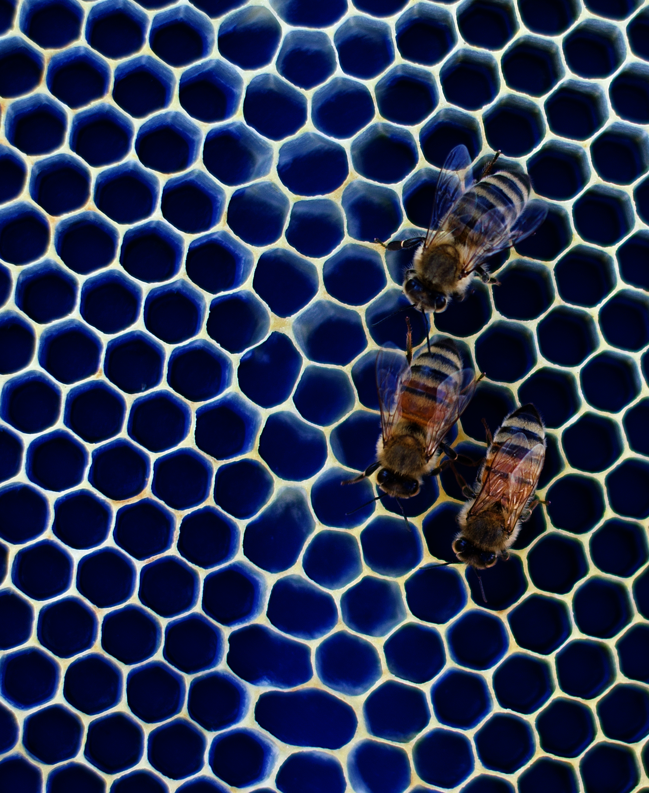
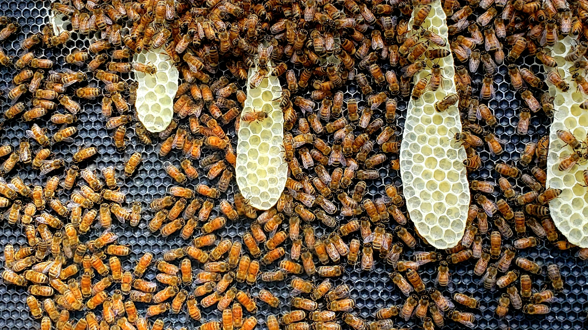
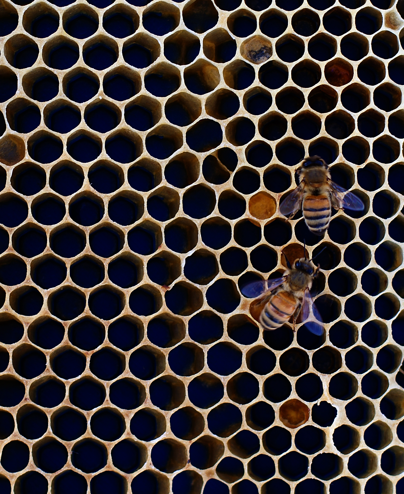
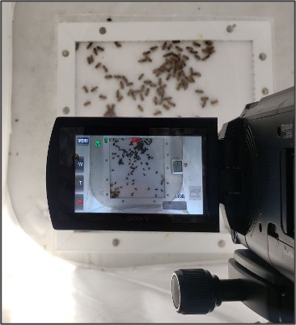

Research Projects
Understanding human–honeyguide communication
How do synchronized vocalizations help humans and honeyguides solve a shared navigation problem, and what dynamical principles govern their coordination?
In collaboration with Prof. Claire Spottiswoode FRS and her team at the University of Cape Town, I study how humans and Greater Honeyguides (Indicator indicator) communicate in real time as they navigate together to wild bee nests. I use mathematical and AI-based, data-driven models of this two-way communication between people and a free-living wild animal.
Measuring Mather: measurement, interpretation, and learning in a coupled human–infrastructure system
How should sustainability experiments be designed in residential settings, where people adapt to what is being measured?
The Measuring Mather project instruments, models, and interprets energy use, environmental conditions, and food waste in a large Harvard undergraduate residence that serves as a living laboratory.
Methods:
- Continuous environmental sensing
- Analysis of power and steam use
- Machine-vision estimation of food waste
- Physical prototyping of ventilation and cooling
- Ongoing community engagement
Adaptability of honeycomb structure
What patterns emerge as honeybees collectively build and adapt their comb on surfaces with different geometric frustrations?
Methods:
- Data collection with 3D-printed panels that test how bees respond to different initial conditions
- X-ray microscopy to identify building modes and patterns in comb built on experimental frames
- Mathematical and physical modeling of the observed patterns



Collective resource distribution in honeybees
How do honeybees communicate to find fed individuals during trophallaxis (food-sharing) exchanges?
Methods:
- In-lab video recordings of fed and food-deprived honeybee groups exchanging food
- Topological data analysis to characterize food distribution and detect shifts in behavioral regimes
- Data-driven agent-based models to identify the local rules behind resource distribution
